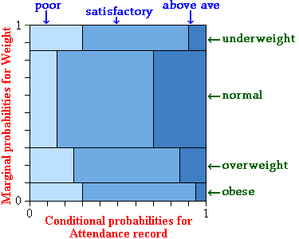

Relationships
The relationship between two numerical variables can be summarised by a correlation coefficient and least squares line. Two categorical variables may also be related.
We say that two categorical variables are associated if knowledge of the value of one tells you something about the likely value of the other.
If the conditional distribution of Y given X = x depends on the value of x, we say that X and Y are associated.
Example
We illustrate the idea of association with an artificial example relating absenteeism of employees in a supermarket chain to their weight. The table below shows the joint probabilities for these employees.
| Attendance record | ||||
|---|---|---|---|---|
| Poor | Satisfactory | Above average | Marginal | |
| Underweight | 0.0450 | 0.0900 | 0.0150 | 0.1500 |
| Normal | 0.0825 | 0.3025 | 0.1650 | 0.5500 |
| Overweight | 0.0500 | 0.1200 | 0.0300 | 0.2000 |
| Obese | 0.0300 | 0.0650 | 0.0050 | 0.1000 |
| Marginal | 0.1700 | 0.5400 | 0.2900 | 1.0000 |
A proportional Venn diagram displays the conditional probabilities for attendance, given weight category, graphically.

If we know that an employee has normal weight, there is a higher probability of having above average attendance than an overweight employee. Since the conditional probabilities for attendance, given weight are different for different weight categories, the two variables are associated.